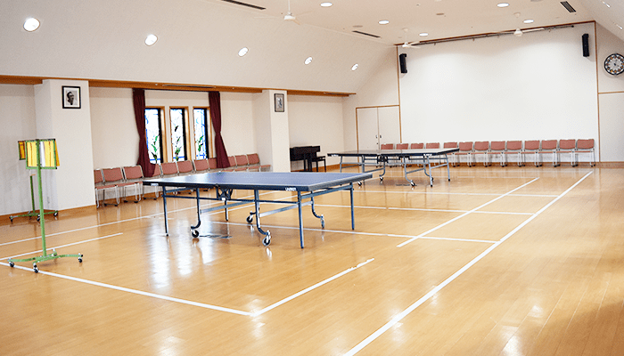
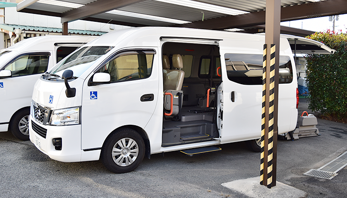
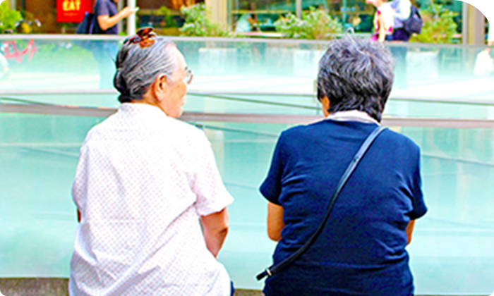

精神科デイケア、
精神科デイケア、
デイナイトケア、
ショートケア

病気の再発防止、健康維持・管理
社会生活の質の向上を目的とした外来治療のひとつです。
デイケアとは地域・社会で生活を送りながら、病気の再発防止、健康維持・管理、社会生活の質の向上を主な目的とした通所型の外来治療のひとつです。
デイケアでの集団生活や各種プログラムを通して、社会生活を送る上で必要な技術や知識を身につけ、生活のリズムを整えながら自立生活の自信を回復し、より健康的な社会生活が送れることを目指します。
他にもそれぞれの専門医療スタッフの立場から、個別の相談窓口やご家族の支援も行なっており、ご本人を取り巻く生活の環境調整などにも支援しております。
就労を考えている、食事の準備が苦手で栄養が偏りがちな方、１人暮らしで寂しい、家にいても何もすることが無い、仲間が欲しい、家族と適度な距離をとりたい・・・などの利用目的もメンバーよってさまざまです。

就労支援プログラムや、農園芸・料理などの活動、カラオケ等のレクリエーションを通じて、社交能力の向上等を目指しています。

体育館においては、バレーボール・バトミントンなどのスポーツを含めた様々な活動を、行っております。

個人的な相談やご家族の方々への支援も行っており、給食や送りサービスも用意しております。
デイケアプログラムの考え方

生活支援型
・居場所、仲間作り
・余暇活動の援助
・食事、料理教室
・レクリエーション
・生活教室
・趣味活動
就労支援型
・就労支援
・リワーク
・内職作業
・パソコン教室
・喫茶活動
・OA

健康支援型
・スポーツ
・栄養指導
・健康倶楽部
・健康教室
・服薬管理
活動プログラム
| 午前 | 午後 | |
| 月曜 | ・健康ウォーク ・園芸 ・お仕事相談 ・卓球 ・注意サインチェック ・フリースペース |
・ギタークラブ ・テーマミーティング ・スポーツ ・制作 ・ステップワーク ・フリースペース |
| 火曜 | ・コミュニティミーティング ・生活教室 ・スポーツ ・個別就労支援 ・健康相談 ・栄養相談 ・リワーク ・フリースペース |
・クッキング(栄養指導) ・ミュージックサロン ・制作 ・卓球 ・ステップワーク ・フリースペース |
| 水曜 | 自由選択 ・制作 ・DVD |
・やまぼうし ・パソコン教室 ・軽スポーツ ・SST ・陶芸 ・ステップワーク ・フリースペース |
| 木曜 | ・脳トレ ・クリーンパートナー ・フリーアート ・卓球 ・園芸 ・ステップワーク ・フリースペース |
・やまぼうし ・マッスルン ・アウトドア（最終週 ・ステップワーク ・フリースペース |
| 金曜 | ・バレー部 ・フットケア ・しゃべり場 ・注意サインチェック ・ステップワーク ・フリースペース |
・バレー部 ・健康倶楽部 ・リワーク ・制作 ・ステップワーク ・フリースペース |
デイケア
| 8時 | 受付健康チェック |
|---|---|
| 朝食準備 | |
| 9時 | 朝食 |
| 余暇時間 | |
| 10時 | 開始ミーティング |
| 11時 | 午前の活動 |
| 12時 | 昼食準備 |
| 昼食 | |
| 13時 | 昼休み |
| 14時 | 午後の活動 |
| 15時 | 掃除 |
| 16時 | 終了ミーディング |
デイナイトケア
| 16時 | 余暇時間 |
|---|---|
| 17時 | 夕食準備 |
| 夕食 | |
| 18時 | 帰宅 |
活動風景

デイナイトケア
より地域生活の充実を図るために、日中だけになく朝から夕方までのサービスとして、デイナイトケアを行っています。
こんな方々が利用しています
- ・食事の準備が苦手
- ・一人暮らしで寂しい
- ・毎日の栄養管理を上手にしたい
- ・気分転換をしたい
- ・家にいると何もすることがないので、デイナイトケアを利用して生活のリズムを整えたい
利用料金
精神科デイケア・デイナイトケアは外来治療の一部です。
支払いは、国民健康保険や社会保険の保険証を提示することで一部の自己負担になります。
又、自立支援医療を申請されると費用が減額になることがあります。
営業時間
- 開所日
- 月・火・水・木・金曜日 （日・祝祭日はお休みです）※ 土曜日は不定期
- 活動時間
- デイケア 10:00～16:00
- デイナイトケア 8:00～18:00
- ショートケア 10:00~13:00/13:00~16:00

〒830-0047 福岡県久留米市津福本町1012
 0942-33-1581 (代表)
0942-33-1581 (代表)
FAX 0942-33-1586
| 月 | 火 | 水 | 木 | 金 | 土 | 日・祝 | |
|---|---|---|---|---|---|---|---|
| 9:00〜12:30 | ○ | ○ | ○ | ○ | ○ | ○ | × |
| 14:00〜17:00 | ○ | ○ | ○ | × | ○ | × | × |
| 9:00〜12:30 | 14:00〜17:00 | |
|---|---|---|
| 月 | ○ | ○ |
| 火 | ○ | ○ |
| 水 | ○ | ○ |
| 木 | ○ | × |
| 金 | ○ | ○ |
| 土 | ○ | × |
| 日・祝 | × | × |